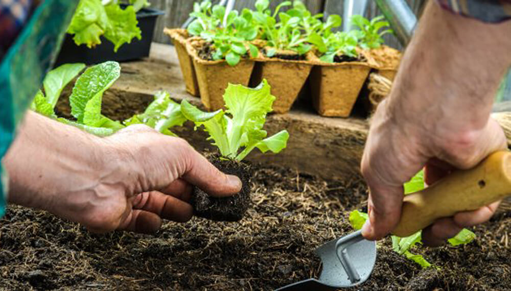

Cuidados de una Huerta Casera:
Tener tu propio espacio verde es una maravilla para dar vida a tu hogar, y aún más si de tu huerto puedes obtener algunos de los alimentos que necesitas en tu dieta diaria. Por eso, aquí te dejamos algunos tips para mantenerlo, cuidarlo o comenzarlo. ¡Tu esfuerzo rendirá frutos!
- Utiliza tus residuos orgánicos de plantas y verduras, así como las cáscaras de huevo para crear una composta que después podrás añadir a tus sembradíos.
- Riega tus plantas por el atardecer para evitar la evaporación y favorecer la infiltración del agua en el sustrato.
- Poda periódicamente tu huerto para que se potencien los brotes auxiliares y fructifique mejor.
- Ayuda a tus plantas dirigiéndolas con ramas o guías de madera para evitar que sus tallos toquen el suelo.
- Rota de lugar los cultivos que tengas de acuerdo a la temporada, así los nutrientes del suelo no se agotarán.
- Las catarinas y abejas son grandes aliados de tus plantas, no las ahuyentes.
- Las catarinas y abejas son grandes aliados de tus plantas, no las ahuyentes.